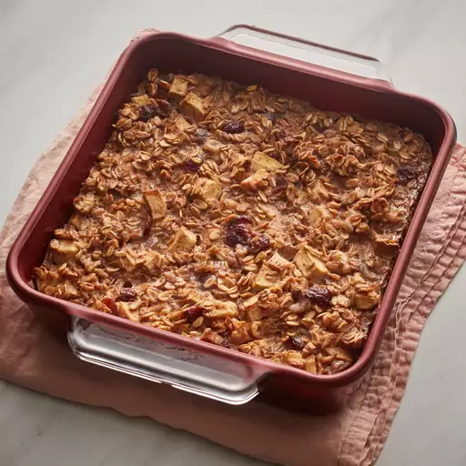

Baked Cranberry Oatmeal

Description
Yummy baked oatmeal with apples, walnuts, and dried cranberries. A perfect way to spice up your plain old oatmeal breakfast.
Ingredients
- 1 1/2 cups milk
- 3 tablespoons brown sugar
- 1 teaspoon ground cinnamon
- 1/4 teaspoon ground nutmeg
- 1/4 teaspoon ground cloves
- 3/4 cup rolled oats
- 3/4 cup chopped apples
- 1/3 cup dried cranberries
- 1/3 cup chopped walnuts, or as desired
Steps
- Preheat oven to 350 degrees F (175 degrees C). Grease an 8x8-inch baking dish.
- Bring milk, brown sugar, cinnamon, nutmeg, and cloves to a boil in a saucepan; remove from heat. Combine oats, apples, dried cranberries, and walnuts in a bowl; transfer to the prepared baking dish. Pour milk mixture over oat mixture.
- Bake in the preheated oven until lightly browned, 30 to 35 minutes.